Hello, these are the documentations of my projects that I have done in Singapore Polytechnic.
Chess piece
I have used line, center diameter, fit point spline, trim and fillet to create the base of my name tag. After finalising it, I created a text on the name tag. Finally, I used extrude to create a 3D model from the sketch of my name tag.
I have used line, center diameter circle, fit point spline and trim to sketch one side of a chess piece(King). Then, I used revolve to select the one side of the sketch to create the full King Chess Piece which was symmetrical.
| Steps | Description | Picture of the steps | Key notes |
|---|---|---|---|
| 1 | Firstly, in order to create a 3D Model Chess piece, I have to create a 2 Dimensional Sketch. In order to create the 2D Dimensional Sketch, I have to click new sketch and click at the bottom surface. Since I want the 3D King Chess Piece to be symmetrical, I only have to create one side of the sketch. I used line, fit point spline and center diameter circle to create one side of the sketch like show in the picture. | 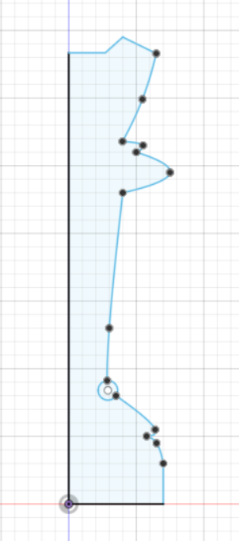 | Key commands being used: Line, fit point spline and center diameter circle. |
| 2 | Secondly, I selected the 2D Dimensional Sketch and used Revolve to create the full King Chess Piece Sketch like the picture shown. I selected the Y-axis while using the Revolve command to create the full King Chess Piece Sketch. | 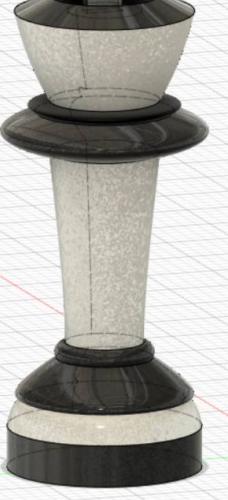 | Key command being used is Revolve. Revolve is to revolve a sketch profile around the selected axis. |
| 3 | Once the main King Chess piece is finalised, I selected this part of the King Chess Piece (shown in the picture) to draw the cross to indicate that this chess piece is a king. | 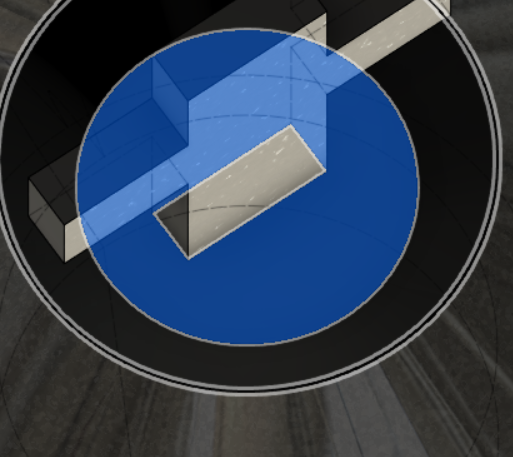 | Key information is to select the right portion of the body to create a proper sketch. |
| 4 | Finally, I used line and 2 point rectangle to create the cross as the final touch for the King Chess Piece. Then I used extrude to make a 3D version of the cross. | 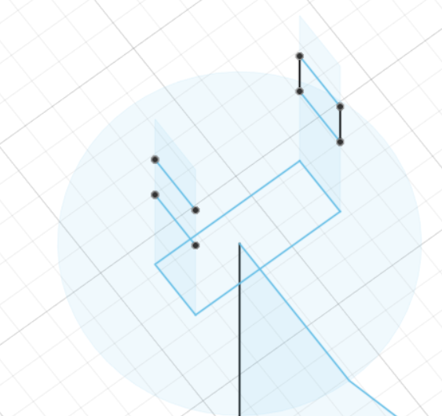 | Key commands being used are line, 2 point rectangle and extrude. |
After using revolve to create the 3D King Chess Piece, I used Paint-Metal Flake Silver and Paint-Metal Flake (Black) to make the Chess Piece more appealing.
At first, I increased the height of the chess piece which resulted its height to be 10cm. Then, I used Sketch Scale to reduce the height of the chess piece and currently it is 4cm.
I have learnt how to be precise with measurements by using the Sketch Scale tool. Not only that, I have also learnt the usage of revolve as it makes my work easier. By using revolve, I only have to create one side of the King Chess Piece. This causes the King Chess Piece to be symmetrical too.
Exercise 3
I have used Sketch Dimension, Center Diameter Circle, 2-Point Rectangle and line to create the sketch of exercise 3. I used extrude to create the 3D model of the Exercise 3.
| Steps | Description | Picture of the steps | Key notes |
|---|---|---|---|
| 1 | Firstly, in order to create a 3D Model of exercise 3, I have to create a 2 Dimensional Sketch. In order to create the 2D Dimensional Sketch, I have to click new sketch and click at the bottom surface. Then, I used 2-point rectangle command with the given dimensions to create the base. The sketch is shown in the picture. | 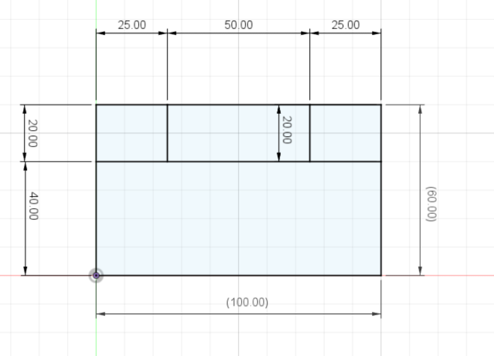 | Key commands being used: Line and 2-point rectangle. |
| 2 | Secondly, I selected the 2D Dimensional Sketch and used extrude to create the base. Its height is 40mm. | 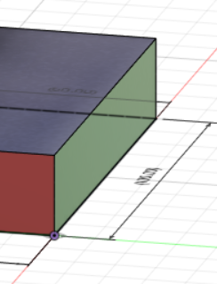 | Key command being used is Extrude. Extrude is to add depth to closed sketch faces. Be careful of the dimensions given. |
| 3 | Once the based is finalised, I selected a part of the base and drew the final sketch (shown in the picture) with the exact dimensions given. | 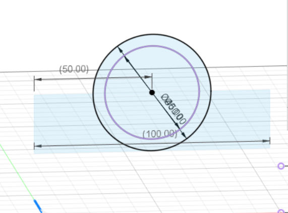 | Key information is to select the right portion of the body to create a proper sketch and follow the exact dimensions. |
| 4 | Finally, I selected the final sketch and extruded with the dimensions given. (shown in the picture) | 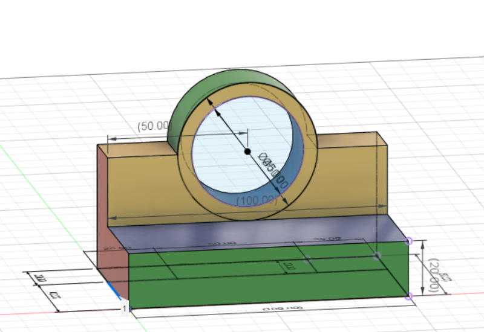 | Key command being used is extrude. |
After extruding my sketch, I used Powder Coat – Rough (Green), Paint – Metal Flake (Blue), Paint – Metal Flake (Yellow), Aluminum- Anodized Rough (Blue) and Aluminum- Anodized Rough (Red) for its appearance.
At certain times, I did not follow the exact dimension given in exercise 3. To rectify my mistakes, I had to use sketch dimension to change the dimension of my sketch.
I have learnt how to be precise with measurements by using the Sketch Scale tool.
Exercise 5
I have used Sketch Dimension, Center Diameter Circle, 2-Point Rectangle, line, trim and offset to create the sketch of exercise 5. I used extrude to create the 3D model.
| Steps | Description | Picture of the steps | Key notes |
|---|---|---|---|
| 1 | Firstly, in order to create a 3D Model of exercise 5, I have to create a 2 Dimensional Sketch. In order to create the 2D Dimensional Sketch, I have to click new sketch and click at the bottom surface. Then, I used 2-point rectangle, 2 point circle, trim and mirror with the given dimensions to create the base. The sketch is shown in the picture. | 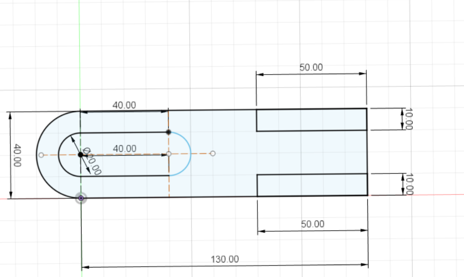 | Key commands being used: 2-point rectangle, 2 point circle, trim and mirror. |
| 2 | Secondly, I selected the 2D Dimensional Sketch and used extrude to create the base. | 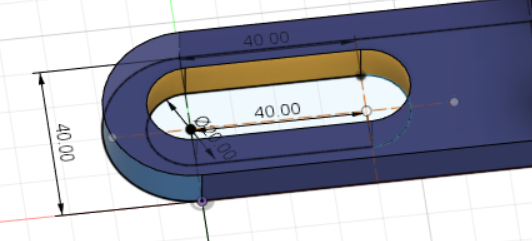 | Key command being used is Extrude. Extrude is to add depth to closed sketch faces. Be careful of the dimensions given. |
| 3 | Once the based is finalised, I selected a part of the base and drew the final sketch (shown in the picture) with the exact dimensions given. | 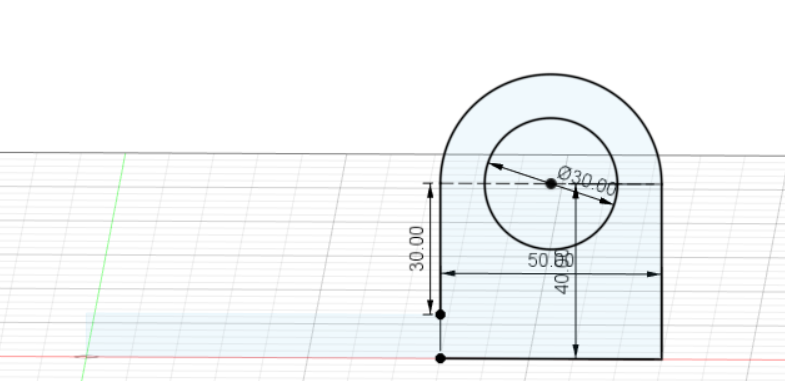 | Key information is to select the right portion of the body to create a proper sketch and follow the exact dimensions. |
| 4 | Then I used mirror to copy the exact sketch that I have done on one side and paste it on the other side (shown in the picture). | 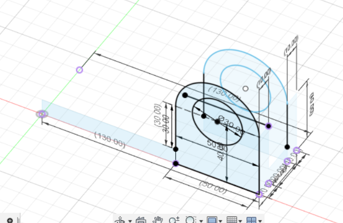 | Key command being used is extrude. |
| 5 | Then I selected both sketches and extruded it with the exact given dimensions. (shown in the picture) | 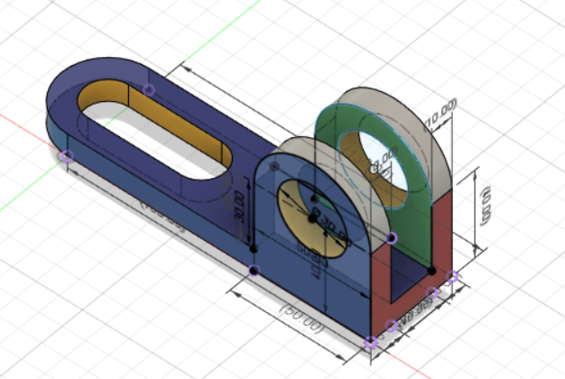 | Key command being used is extrude. |
After extruding my sketch, I used Aluminium – Anodized Rough (Blue), Plastic – Translucent Matte (Blue), Paint – Enamel Glossy (Grey), Plastic – Translucent Matte (Yellow), Paint – Enamel Glossy (Red) and Paint – Enamel Glossy (Green) for its appearance.
I have learnt how to be precise with measurements by using the Sketch Scale tool.
Batman fidget spinner
I have used Sketch Dimension, Center Diameter Circle, Inscribe Polygon, Line and Fit Point Spline to create the sketch. Not only that, I have used Mirror and Offset to complete the sketch. Then, I used extrude to create the 3D model of the Batman fidget spinner.
| Steps | Description | Picture of the steps | Key notes |
|---|---|---|---|
| 1 | Firstly, in order to create a 3D Model of Batman Fidget Spinner, I have to create a 2 Dimensional Sketch. In order to create the 2D Dimensional Sketch, I have to click new sketch and click at the bottom surface. Then, I used Center Diameter Circle, Inscribe Polygon, Line and Fit Point Spline to create one side of the sketch. Then I used mirror to create the full base. | 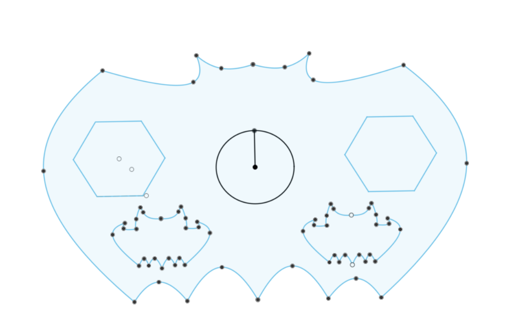 | Key commands being used: Center Diameter Circle, Inscribe Polygon, Line and Fit Point Spline. I used mirror to create a symmetrical fidget spinner. |
| 2 | Secondly, I selected the 2D Dimensional Sketch and used extrude to create the base. | 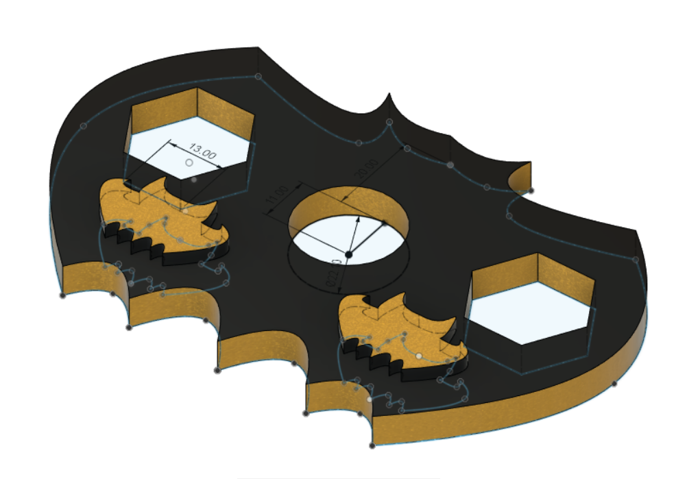 | Key command being used is Extrude. Extrude is to add depth to closed sketch faces. Be careful of the dimensions given. |
After extruding my sketch, I used Paint-Enamel Glossy (Black) and Paint-Metal Flake (Yellow) for its appearance.
I have learnt how to use Mirror to make my fidget spinner symmetrical.
Christmas Decorative Box
I have used Sketch Dimension, Center Diameter Circle, Line and Fit Point Spline to create the sketch. Not only that, I have used Mirror and Offset to complete the sketch. Then, I used extrude to create the 3D model of the Christmas Decorative Box.
| Steps | Description | Picture of the steps | Key notes |
|---|---|---|---|
| 1 | Firstly, in order to create a 3D Model of Christmas Decorative Box, I have to create a 2 Dimensional Sketch. In order to create the 2D Dimensional Sketch, I have to click new sketch and click at the bottom surface. Then, I used 2 Point Rectangle, Line and Mirror to create the base, front, right and left sides of the box. (shown in the picture) | 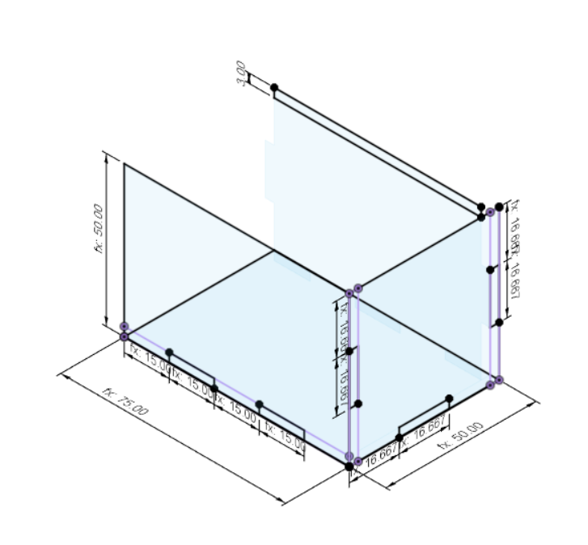 | Key commands being used: Center Diameter Circle, Inscribe Polygon, Line and Fit Point Spline. I used mirror to create a symmetrical fidget spinner. |
| 2 | Secondly, I selected the 2D Dimensional Sketch and used extrude to create the base.(shown in the picture) | 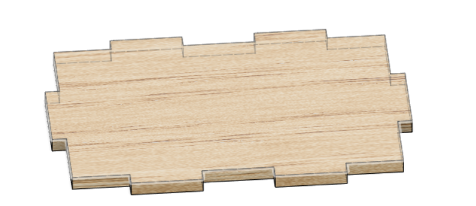 | Key command being used is Extrude. Extrude is to add depth to closed sketch faces. |
| 3 | After extruding all the sketches, I created a slider so the box would be a sliding box. In order to create the slider, I used 2 point rectangle and extrude it by -1mm. This will create space for the top lid to slide in the box. I did that for both left and right sides of the box(shown in the picture). | 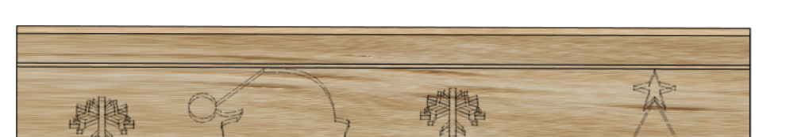 | Key command being used is Extrude. Extrude is to add depth to closed sketch faces. |
| 4 | After finishing up the 3D model of the box, I created christmas designs for all the sides of the box. In order to do that,I created a new sketch and selected the body of the model that I would like to do my designs on. I used line, Fit Point Spline and 2 Point Circles. After creating the sketches, I extruded it by -1mm so the designs will be engraved on the box. I made the decorative box as a christmas theme (shown in the picture). | 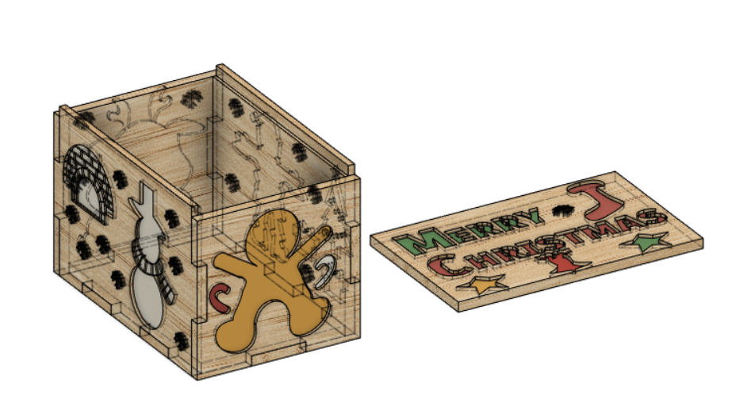 | Key command being used is Extrude. Extrude is to add depth to closed sketch faces. |
After extruding my sketch, I used Paint- Metal Flake (Green), Paint- Metal Flake (Red), 3D Ash – Glossy and Paint- Metal Flake (White) for its appearance. I created a separate top layer so this decorative box will be a sliding box.
I have learnt how to use Mirror to make designs of my Christmas Decorative Box symmetrical.
Engineering Academy T-shirt Printing Project
I used dye sublimation to print designs on my t-shirt. Firstly, I will print the designs on the sublimation paper. Then, I use the heater to diffuse the designs from the sublimation paper to my t-shirt.
While uploading my HTML file to Github, my CSS file did not load. I could not figure out the problem. By asking my Engineering Academy teachers, they pointed out that I have created a folder called "CSS" in my code. However, I did not create such a folder in Github which caused my CSS file not to be loaded. I should have created the "CSS" folder in Github.
I watched videos of learning HTML under 12 minutes and learning CSS under 12 minutes. Not only that, I watched several other videos from Youtube on how to create websites using HTML and CSS. Furthemore, I also refer to https://www.w3schools.com/ when I face problems formating my website. I also refer to HTML Cheat Sheet and CSS Cheat Sheet for commands when coding my website.
HTML represents Hyper Text Markup Language. HTML is the standard markup language for making Web pages. HTML depicts the design of a Web page. HTML comprises of a progression of components. HTML components advise the program how to show the substance.CSS represents Cascading Style Sheets. CSS portrays how HTML components are to be shown on screen, paper, or in other media. CSS saves a ton of work. It can handle the design of numerous site pages at the same time. Outside templates are put away in CSS records
GitHub is a code facilitating stage for variant control and coordinated effort. It lets you and others cooperate on projects from anyplace. This instructional exercise shows you GitHub basics like repositories, branches, commits, and pull Requests.
Save all your files of codes to one folder and drag those files of codes to the uploading page
First, click on the settings of the repository! Then, click on "manage access" tab. Then, click on invite collaborator! This is what you should see!
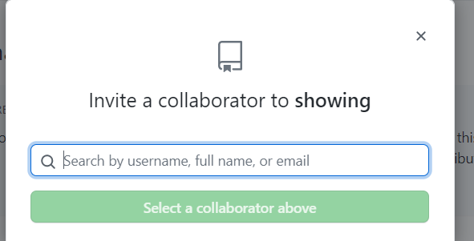That's it!
GitHub Desktop is an instrument that permits you to cooperate with GitHub from the work area. With this new application, you can work simpler without relying upon your program. GitHub Desktop upholds: Attributing submits with teammates. Checkout branches with pull demands.